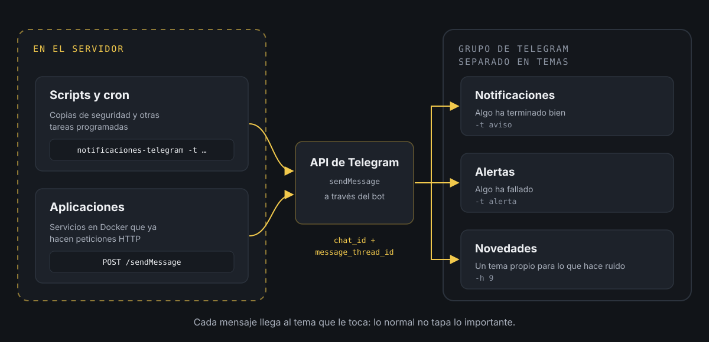

Notificaciones en telegram de tus procesos y aplicaciones propias.
En casa tengo un servidor con bastantes cosas funcionando solas: copias de seguridad que se lanzan de madrugada, un ventilador que se enciende solo para prevenir que el servidor se caliente, aplicaciones en Docker que vigilan carpetas y procesan lo que va llegando... Todo muy cómodo hasta que algo dejara de funcionar y no me enterara.
Una copia que llevara una semana fallando o una aplicación que se quedara esperando a que yo hiciera algo. Lo descubriría cuando lo necesitara, que suele ser el peor momento.
El dilema
Lo primero que viene a la cabeza es montar dashboards. Con Grafana y Prometheus tienes gráficas de casi todo lo que pasa en el servidor (CPU, memoria, disco, contenedores...) y alertas cuando algo se sale de lo normal. Para lo estándar es la solución sólida y no tiene sentido reinventarla.
El problema son los procesos propios. Un script de copia de seguridad o una aplicación hecha por mí no tienen un dashboard esperándolos. Para que Grafana los viera tendría que exponer métricas desde cada uno, montar un exporter o escribir reglas de alerta a medida, y para saber si una copia ha terminado bien es mucho trabajo.
El término medio
Así que lo reparto: Grafana y Prometheus para lo que ya cubren bien, y para lo hecho a medida, un aviso hecho a medida. Que sea el propio proceso el que cuente cómo le ha ido, en el momento en que pasa.
Para recibir esos avisos elegí Telegram. Ya lo tenía en el móvil y en el ordenador, y su API para bots es de lo más sencillo que hay: una petición HTTP con el texto y listo. Así que monté un bot que, entre otras cosas, sirve para avisarme en un grupo en el que estamos él y yo.
La clave es que el grupo tiene los temas activados. Un grupo con temas funciona como un pequeño foro: cada tema es un hilo propio, con sus mensajes y sus avisos. Yo tengo uno para las notificaciones normales (algo ha terminado bien), otro para las alertas (algo ha fallado) y alguno más para tareas concretas que generan mucho movimiento y que no quiero mezcladas con lo demás.
Y aquí está la gracia de separarlo: Telegram deja silenciar cada tema por separado. Los temas informativos (notificaciones, novedades) los tengo en silencio, así que los mensajes llegan, pero no suenan ni me interrumpen. Les echo un vistazo cuando me apetece. El de alertas, en cambio, tiene el sonido activado, porque lo que cae ahí requiere que haga algo.
Si todo fuera al mismo sitio, tendría que elegir entre dos males: silenciar el grupo entero y arriesgarme a no ver un fallo, o dejarlo sonando y acostumbrarme a ignorarlo. Y un aviso que te acostumbras a ignorar es lo mismo que no tener aviso. Al tratarse de un grupo en el que solo estamos el bot y yo, puedo configurarlo a mi gusto sin molestar a nadie.
Si todavía no tienes bot, en cómo crear un bot de Telegram cuento el paso a paso. Aquí doy por hecho que ya tienes su token, que has creado un grupo, que has activado los Temas al editarlo y que has añadido el bot como miembro.
Cómo es el flujo

Hay dos caminos para llegar al grupo. Los scripts del servidor usan un pequeño comando que lo resuelve con una línea, y las aplicaciones llaman a la API directamente. Al final los dos hacen lo mismo: decirle a Telegram en qué grupo y en qué tema va cada mensaje.
Sacar los identificadores
Para mandar un mensaje a un tema concreto hacen falta dos datos: el identificador del grupo (chat_id) y el del tema (message_thread_id). Ninguno se ve en la aplicación de Telegram, pero el propio bot te los puede dar.
Por defecto los bots tienen activado el modo privacidad: en un grupo solo reciben los comandos que van dirigidos a ellos. Así que escribe en cada tema un comando mencionando al bot, por ejemplo /start@mis_avisos_bot. Después, pídele a la API los últimos mensajes que ha recibido:
curl -s "https://api.telegram.org/bot<TOKEN>/getUpdates" | python3 -m json.toolDebería verse algo así (recortado):
{ "ok": true, "result": [ { "update_id": 812345671, "message": { "message_id": 15, "message_thread_id": 4, "chat": { "id": -1001234567890, "title": "Servidor de casa", "is_forum": true, "type": "supergroup" }, "is_topic_message": true, "text": "/start@mis_avisos_bot" } } ]}Lo que buscas está en dos sitios:
chat.ides el identificador del grupo. En los grupos con temas es negativo y empieza por-100.message_thread_ides el identificador del tema en el que escribiste. Repite el comando en cada tema y apunta el número de cada uno.
El tema General es la excepción: no tiene message_thread_id. Para escribir en él basta con no mandarlo.
Hay otra forma de sacar el tema sin la API. Si copias el enlace de cualquier mensaje de un tema (clic derecho y Copiar enlace del mensaje), queda algo así:
https://t.me/c/1234567890/4/15El primer número es el grupo sin el -100 delante, el segundo es el tema y el tercero, el mensaje.
Si getUpdates devuelve una lista vacía, lo más probable es que el comando no llevara la mención al bot. Y si devuelve un error 409, es que ese bot ya tiene un webhook configurado (otra aplicación lo usa para recibir mensajes). En ese caso, lo más sencillo es sacar los datos con el enlace.
Un comando para todos los scripts
Para los scripts de bash no quería repetir la llamada a curl en cada uno, así que lo metí todo en un comando, notificaciones-telegram. Los datos van en un fichero de configuración aparte, /etc/notificaciones/telegram.conf, que es lo único que hay que proteger:
BOT_TOKEN="123456789:AAE-token-de-ejemplo"CHAT_ID="-1001234567890"THREAD_ID_AVISO="4"THREAD_ID_ALERTA="6"Y este es el comando:
#!/bin/bash## notificaciones-telegram## Manda un mensaje a un grupo de Telegram con temas: los avisos van al tema# de notificaciones y las alertas al de alertas, salvo que se indique otro# tema con -h.## Uso:# notificaciones-telegram -t aviso -m "Copia terminada"# notificaciones-telegram -t alerta -m "Ha fallado la copia"# notificaciones-telegram -t aviso -m "Mensaje" -h 9 (fuerza el tema 9)# notificaciones-telegram -t aviso -m "<b>Negrita</b>" -H (mensaje en HTML)# set -euo pipefail CONFIG_FILE="/etc/notificaciones/telegram.conf"MAX_CARACTERES=4000USO='Uso: notificaciones-telegram -t <aviso|alerta> -m "mensaje" [-h thread_id] [-H]' if [[ ! -r "$CONFIG_FILE" ]]; then echo "ERROR: No se puede leer $CONFIG_FILE" >&2 exit 1fi # Define BOT_TOKEN, CHAT_ID, THREAD_ID_AVISO y THREAD_ID_ALERTAsource "$CONFIG_FILE" TIPO=""MENSAJE=""THREAD_ID=""PARSE_MODE="" while getopts "t:m:h:H" opt; do case "$opt" in t) TIPO="$OPTARG" ;; m) MENSAJE="$OPTARG" ;; h) THREAD_ID="$OPTARG" ;; H) PARSE_MODE="HTML" ;; *) echo "$USO" >&2; exit 1 ;; esacdone if [[ -z "$TIPO" || -z "$MENSAJE" ]]; then echo "ERROR: Faltan parámetros." >&2 echo "$USO" >&2 exit 1fi # El tipo se valida siempre. Si no se ha forzado un tema con -h, se usa el del tipo.case "$TIPO" in aviso) THREAD_ID="${THREAD_ID:-$THREAD_ID_AVISO}" ;; alerta) THREAD_ID="${THREAD_ID:-$THREAD_ID_ALERTA}" ;; *) echo "ERROR: Tipo '$TIPO' no válido. Usa 'aviso' o 'alerta'." >&2 exit 1 ;;esac # Telegram no acepta mensajes de más de 4096 caracteresif (( ${#MENSAJE} > MAX_CARACTERES )); then MENSAJE="${MENSAJE:0:MAX_CARACTERES}[...] (recortado)"fi DATOS=(--data-urlencode "chat_id=${CHAT_ID}" --data-urlencode "text=${MENSAJE}")if [[ -n "$THREAD_ID" ]]; then DATOS+=(--data-urlencode "message_thread_id=${THREAD_ID}")fiif [[ -n "$PARSE_MODE" ]]; then DATOS+=(--data-urlencode "parse_mode=${PARSE_MODE}")fi # La URL lleva el token: se le pasa a curl por la entrada estándar (-K -)# para que no aparezca en la lista de procesosRESPUESTA=$(curl -sS --max-time 15 "${DATOS[@]}" -K - \ <<< "url = \"https://api.telegram.org/bot${BOT_TOKEN}/sendMessage\"") || { echo "ERROR: No se ha podido conectar con Telegram." >&2 exit 1} if [[ "$RESPUESTA" != *'"ok":true'* ]]; then echo "ERROR enviando la notificación a Telegram:" >&2 echo "$RESPUESTA" >&2 exit 1fi exit 0Funciona así:
-tes obligatorio y elige el tipo:avisova al tema de notificaciones yalerta, al de alertas.-mes el texto del mensaje.-hfuerza otro tema, por ejemplo uno dedicado a una tarea concreta. El tipo se sigue validando, así que no se cuela nada por error.-Hindica que el mensaje viene en HTML, para usar negritas o enlaces. Sin él, el texto se manda tal cual y da igual lo que lleve dentro.
Para instalarlo, copia el script, crea el fichero de configuración y déjalo legible solo para el usuario que ejecuta los scripts (si no es root, añade un chown a ese usuario):
sudo install -m 755 notificaciones-telegram /usr/local/bin/sudo mkdir -p /etc/notificacionessudo nano /etc/notificaciones/telegram.confsudo chmod 600 /etc/notificaciones/telegram.confPara probarlo:
notificaciones-telegram -t aviso -m "Hola desde el servidor 👋"Si todo va bien no dice nada y el mensaje aparece en el tema de notificaciones. Si algo falla, enseña la respuesta de Telegram. Por ejemplo, con un tema que no existe:
ERROR enviando la notificación a Telegram:{"ok":false,"error_code":400,"description":"Bad Request: message thread not found"}Avisos desde tareas programadas
Donde más partido le saco es en las tareas de cron. Un ejemplo típico es una copia de seguridad que avisa tanto si sale bien como si falla:
#!/bin/bash# copia-fotos: copia la carpeta de fotos al disco de copias if rsync -a --delete /srv/fotos/ /mnt/copias/fotos/ 2> /tmp/copia-fotos.log; then notificaciones-telegram -t aviso -m "✅ Copia de fotos terminada"else notificaciones-telegram -t alerta -m "❌ Ha fallado la copia de fotos:$(tail -n 5 /tmp/copia-fotos.log)"fiSe programa como cualquier otra tarea, en este caso cada noche a las tres y media:
30 3 * * * /usr/local/bin/copia-fotosPara lo que genera muchos mensajes, como una tarea que avisa de cada novedad que encuentra, uso -h con un tema propio. Así no inunda el de notificaciones:
notificaciones-telegram -t aviso -h 9 -m "📖 Nuevo capítulo disponible"Desde aplicaciones: la API directamente
Las aplicaciones son otra historia. Normalmente corren en contenedores Docker, que no ven los comandos del servidor, y además ya saben hacer peticiones HTTP. Para ellas no tiene sentido pasar por el script: lo natural es llamar a la API.
Por ejemplo, una aplicación que vigila una carpeta y avisa cuando llega un libro nuevo que tengo que revisar. En Python basta con la librería estándar, sin instalar nada:
import jsonimport loggingimport osimport urllib.parseimport urllib.request log = logging.getLogger(__name__) TOKEN = os.environ["TELEGRAM_BOT_TOKEN"]CHAT_ID = os.environ["TELEGRAM_CHAT_ID"]THREAD_ID_AVISO = os.environ.get("TELEGRAM_THREAD_ID_AVISO")THREAD_ID_ALERTA = os.environ.get("TELEGRAM_THREAD_ID_ALERTA") def notificar(texto, thread_id=THREAD_ID_AVISO): """Manda un mensaje al grupo. Si falla, lo apunta en el log y sigue.""" datos = {"chat_id": CHAT_ID, "text": texto[:4000]} if thread_id: datos["message_thread_id"] = thread_id peticion = urllib.request.Request( f"https://api.telegram.org/bot{TOKEN}/sendMessage", data=urllib.parse.urlencode(datos).encode(), ) try: with urllib.request.urlopen(peticion, timeout=10) as respuesta: return json.load(respuesta).get("ok", False) except Exception as error: log.warning("No se ha podido enviar la notificación: %s", error) return FalseY donde la aplicación detecta el libro nuevo:
notificar(f"📚 Libro nuevo pendiente de revisar: {titulo}")Otro caso que tengo montado es evercooler, el contenedor que enciende un ventilador debajo del servidor según lo que marca la CPU en Prometheus (lo cuento en el ventilador que se enciende solo). Aunque lee los datos de Prometheus, sus avisos van por libre: Grafana no sabe nada del relé que enciende el ventilador. Cada vez que lo enciende o lo apaga me deja una nota en notificaciones, y si pierde la conexión con el relé, salta una alerta:
def cambiar_ventilador(encender): if not rele.cambiar(encender): notificar("🔌 Se ha perdido la conexión con el relé del ventilador", THREAD_ID_ALERTA) return if encender: notificar("🌀 Ventilador encendido: la CPU va cargada") else: notificar("💤 Ventilador apagado: todo vuelve a la calma")Es la misma función de antes, solo cambia el tema. Lo informativo va al tema por defecto, en silencio, y lo que necesita que haga algo va al de alertas, que sí suena.
Lo importante está en el except: una notificación que falla no puede tumbar la aplicación. Si Telegram no responde o no hay red, se apunta en el log y la aplicación sigue con lo suyo.
Los datos se le pasan como variables de entorno, por ejemplo desde el docker-compose.yml:
services: lecturas: image: mi-app-de-lecturas env_file: .envCon un .env al lado que no se sube nunca al repositorio:
TELEGRAM_BOT_TOKEN=123456789:AAE-token-de-ejemploTELEGRAM_CHAT_ID=-1001234567890TELEGRAM_THREAD_ID_AVISO=4TELEGRAM_THREAD_ID_ALERTA=6Desde cualquier otro lenguaje es lo mismo: un POST a sendMessage con chat_id, message_thread_id y text.
Cosas a tener en cuenta
El token es la llave del bot. Quien lo tenga puede escribir en su nombre y leer lo que recibe. Por eso vive en un fichero con permisos 600 o en un .env fuera del repositorio, y el script se lo pasa a curl por la entrada estándar y no como argumento: los argumentos de un proceso los puede ver cualquier usuario de la máquina con ps. (El getUpdates del principio sí lo lleva en la línea de comandos, pero es algo que haces una vez y a mano.)
El HTML hay que escaparlo. Si mandas un mensaje en modo HTML y lleva un <, un > o un & sueltos, Telegram lo rechaza con un error 400 y el aviso no llega. Pasa mucho con los logs, que es justo lo que mandas cuando algo falla. Por eso el script manda texto plano salvo que le pidas HTML con -H.
Los mensajes tienen un límite de 4.096 caracteres. El script recorta lo que pase de 4.000, pero lo mejor es mandar solo las últimas líneas del log, como en el ejemplo de la copia.
El fichero de configuración se ejecuta. El script lo carga con source, así que lo que haya dentro se ejecuta como código. Con permisos 600 no es un problema, pero conviene saberlo antes de dejar que otro lo edite.
Telegram limita el ritmo. Un bot no puede mandar más de unos 20 mensajes por minuto al mismo grupo. Para avisos de tareas sobra, pero si un script se mete en un bucle y avisa en cada vuelta, Telegram empezará a rechazar mensajes.
Por qué me convence
Lo mejor es que no tengo que acordarme de nada. Si una copia falla me entero esa misma mañana, y si todo va bien, el tema de notificaciones me lo confirma sin hacer ruido. Y gracias a los temas, el móvil solo suena cuando hay algo que atender: lo informativo espera en silencio a que le eche un vistazo.
Además, añadir avisos a algo nuevo es una línea en un script o una llamada a una función en una aplicación. No hay que exponer métricas ni escribir reglas de alerta, y Grafana sigue a lo suyo con lo que ya cubre bien.
Si has llegado hasta aquí, espero que te sirva para que tu servidor también te cuente lo que hace. Y si algún día te escribe de madrugada, al menos será por algo que definiste como importante.